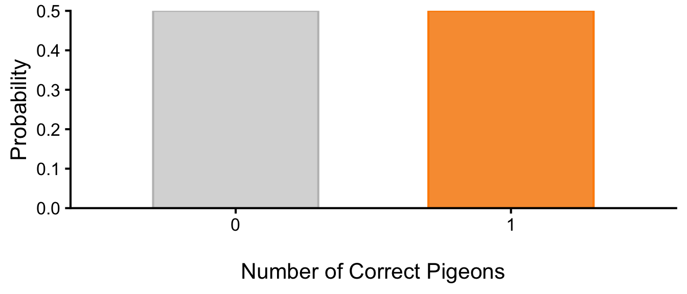
Ch 5. Hypothesis Testing
1 Hypothesis Testing
Remember that psychological science is asking empirical questions about some population, and we gather data from a sample to answer those questions. For example, when Matthias Mehl and his colleagues wanted to know if women talk more than men, they did not ask every single man and woman in the world to answer that question. Instead, they gathered data from 369 people and found that the women in their sample spoke a mean of 16,215 words per day and the men a mean of 15,669 words per day (Mehl et al. 2007). But despite the observed pattern in their sample that women spoke 546 more words per day on average, they concluded that there was no evidence of a gender difference in talkativeness in the population. This assertion raises the question of how researchers can say whether their sample result reflects something that is true of the population.
As in Mehl’s study, when we find some potentially interesting patterns in the data, we need to know if those patterns are strong enough to believe that they reflect something real about the population, or if they could have just happened by chance. At a core, all statistcal tests that we will learn about in this course try to answer the “Is this pattern real?” question.
The answer to this question is that they use a set of techniques called inferential statistics, which is what this chapter is about. We focus, in particular, on null hypothesis testing, the most common approach to inferential statistics in psychological research. We begin with a brief overview of the logic. The specific steps of hypothesis testing and the symbols and math will be introduced in later chapters, and the goal for now is just to understand the logic and key concepts and terminology.
1.1 A Simple Example of Hypothesis Testing: Magical Pigeons
Imagine pigeons that can answer any Yes or No question by pecking. If someone claimed that that they created a new genetic line of magical pigeons who knew the answer to Yes or No questions, how would you put it to the test? When you ask just one of the pigeons whether a coin in your hand is showing heads or tails, and the pigeon gets it right, you would probably not be very surprised. After all, there is a 50% chance of getting the answer right even if the pigeon was just guessing. But what if you asked 4 pigeons and they all got it right? 10 out of 10 pigeons? If 10 out of 10 pigeons answered the questions correctly, you would probably be surprised and think that it is unlikely that the pigeons were just guessing. When would you be willing to believe that this new line of pigeons was indeed special and better than a luck would explain?
1.1.1 Are the Pigeons Any Better Than Chance?
This is the exact logic of hypothesis testing that we will learn about in this chapter. Every pattern in your data can be interpreted in either of these two ways: It might have occurred by chance, or it might reflect some interesting pattern of the thing you are studying (in this case, the pigeons). So you need a way to decide between them. The general logic is as follows:
- Assume, for the moment, that the pigeons are not special at all. Then, you can calculate the probability of a certain number of pigeons being correct just by guessing.
- Determine how likely the observed pattern in your data would be if the pigeons were not special. In other words, how likely is it 10 pigeons would be correct just by chance?
- If the observed pattern would be extremely unlikely, then you cannot hold the assumption that the pigeons are just guessing and would conclude that there are something interesting going on in these pigeons. If the pattern is within the range of what is likely to happen just by chance, there is not enough evidence to say that the pigeons are special.
1.1.1.1 How Likely Are Your Pigeons Getting It Right by Chance?
You may have notice that the logic of answering “is the pattern real?” is mainly about “how likely is this pattern to occur by chance?” It turns out, we have a way to calculate how likely it is expected to occur by chance when you ask a certain number of pigeons. It is pretty intuitive that the probability of one pigeon getting a question correct by chance is 50% (assuming that half of your questions should be answered with Yes, the other half No). This is shown in Figure 1 with the bar highlighted in orange. Similarly, the probability of 2 out of 2 pigeons being correct by chance is 1/4, the probability of 4 out of 4 pigeons being correct by chance is 1/16 (Figure 2), and so on. The probability of all 10 pigeons being correct by chance is miniscule (Figure 3).
1.1.1.1.1 Ask One Pigeon
You can start by asking a question to just one pigeon in this new line of allegedly specialpigeons. Because the pigeon you chose belongs to the population of magical pigeons (i.e., a sample), you expect it to show some interesting power to answer a question correctly.
There are only two possible outcomes: the pigeon either gets it correct or incorrect. Figure 1 shows the probability of each outcome. The bar highlighted in orange shows the probability of the pigeon getting the answer correct by chance, which is 50%. The other bar shows the probability of the pigeon getting the answer incorrect by chance, which is also 50%. You can see that if you add up the probabilities of all possible outcomes, they sum up to 1.
| Correct.Pigeons | Probability |
|---|---|
| 0 | 0.5 |
| 1 | 0.5 |
1.1.1.1.2 Ask Four Pigeons
Maybe you were not satisfied with just one pigeon. The pigeon got it right, but you think that it is quite likely (50% chance) that it just got lucky. So you ask four pigeons the same question. Now, there are five possible outcomes: 0, 1, 2, 3, or 4 pigeons could get the answer correct. Figure 2 shows the probability of each outcome. This probability distribution is what math tells you, but empirically, you could also figure this out by keep asking four pigeons and noting how many got the answers correct. If you repeated this many times, you would see a distribution of outcomes that looks like Figure 2. The bar highlighted in orange shows the probability of all four pigeons getting the answer correct by chance, which is 6.25%. Again, if you add up the probabilities of all possible outcomes, they sum up to 1. Now you can notice that there is a mode in the distribution, and it is a symmetric distribution around the mode. There is some central tendency emerging – the distribution is clumped around the chance level of 50% correct. But this 6.25% chance is not low enough for you to decide that these pigeons are special. So you continue.
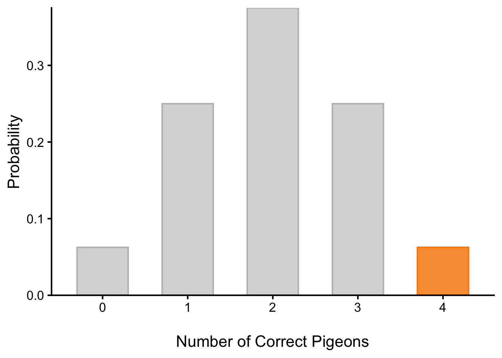
| Correct.Pigeons | Probability |
|---|---|
| 0 | 0.0625 |
| 1 | 0.2500 |
| 2 | 0.3750 |
| 3 | 0.2500 |
| 4 | 0.0625 |
1.1.1.1.3 Ask Ten Pigeons
Now, you ask 10 pigeons the same questions. There are 11 possible outcomes: 0, 1, 2, 3, 4, 5, 6, 7, 8, 9, or 10 pigeons could get the answer correct. Figure 3 shows the probability of each outcome. The bar highlighted in orange shows the probability of all ten pigeons getting the answer correct by chance, which is only about 0.098%. Again, if you add up the probabilities of all possible outcomes, they sum up to 1. Now you can notice that there this distribution start to look like a bell curve. The peak is at the chance level of 50% correct (5 pigeons out of 10), and the distribution is symmetric around the peak, and the probability of having all 10 pigeons correct is very low (highligted in orange), on the far right “tail” of the distribution.
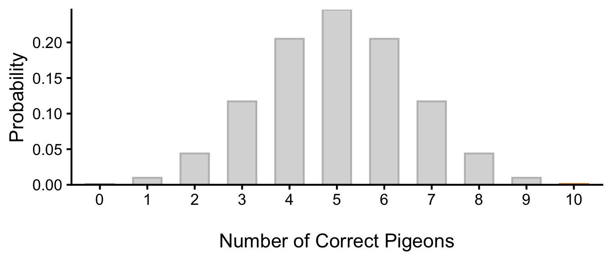
| Correct.Pigeons | Probability |
|---|---|
| 0 | 0.0009766 |
| 1 | 0.0097656 |
| 2 | 0.0439453 |
| 3 | 0.1171875 |
| 4 | 0.2050781 |
| 5 | 0.2460938 |
| 6 | 0.2050781 |
| 7 | 0.1171875 |
| 8 | 0.0439453 |
| 9 | 0.0097656 |
| 10 | 0.0009766 |
Exercises
Probability distributions like this, which show the chance that things occur by chance, are the foundation of inferential statistics. This particular distribution is called a binomial distriibution. While we are at it, let’s do some quick practice about probabilities.
- What is the probability of this many pigeons out of 4 pigeons getting a question correct by chance? For each case, think about how surprising it would be to observe such a result. (Hint: Refer to Figure 2 and Table 2)
- 4 pigeons
- no pigeons
- 3 pigeons
- between 1 and 3 pigeons
TipSolution to 1 (Click to Reveal)
- 4 pigeons out of 4: 0.062
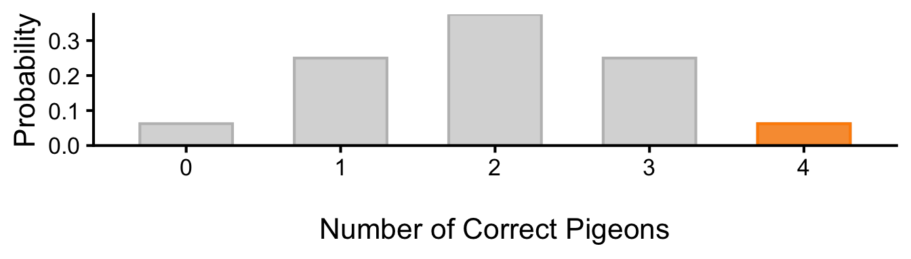
- 0 pigeons out of 4: 0.062
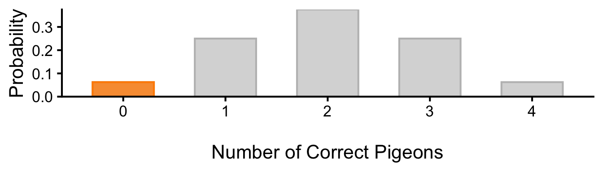
- 3 pigeons out of 4: 0.25
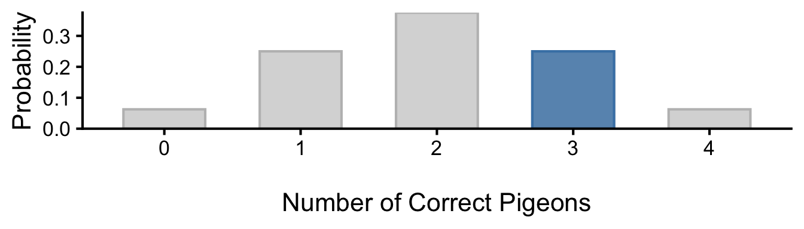
- between 1 and 3 pigeons out of 4: 0.25 + 0.375 + 0.25 = 0.875
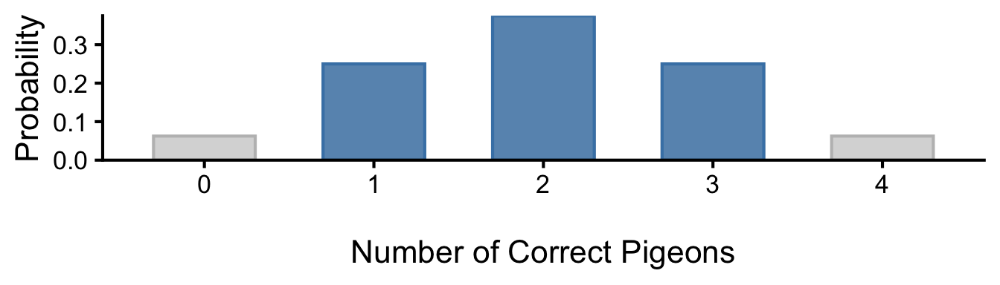
- Repeat this exercise for when you asked 10 pigeons. (Hint: Refer to Figure 3 and Table 3)
- 4 pigeons
- between 4 and 6 pigeons
- 7 or more pigeons
- between 2 and 8 pigeons
- 9 or more pigeons
- number of pigeons that are at least as extreme as 9
TipSolution to 2 (Click to Reveal)
- 4 pigeons out of 10: 0.205
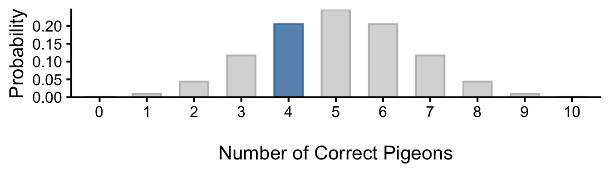
- between 4 and 6 pigeons out of 10: 0.205 + 0.246 + 0.205 = 0.656
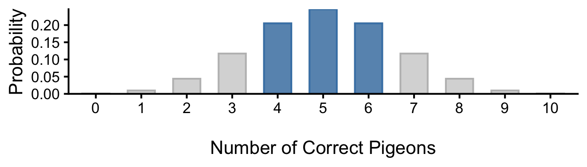
- 7 or more pigeons out of 10: 0.117 + 0.044 + 0.01 + 0.001 = 0.172
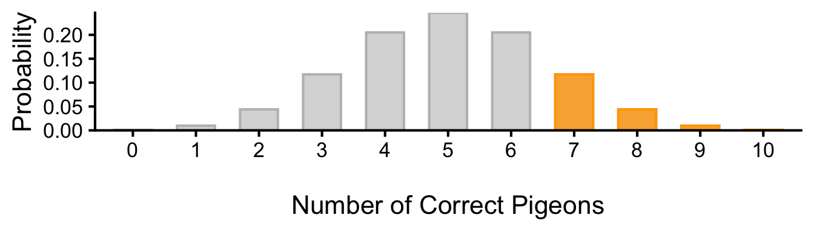
- between 2 and 8 pigeons out of 10: 0.044 + 0.117 + 0.205 + 0.246 + 0.205 + 0.117 + 0.044 = 0.979
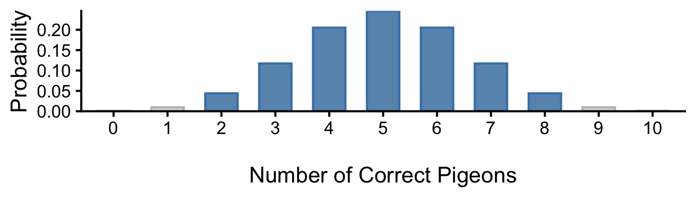
- 9 or more pigeons out of 10: 0.01 + 0.001 = 0.011
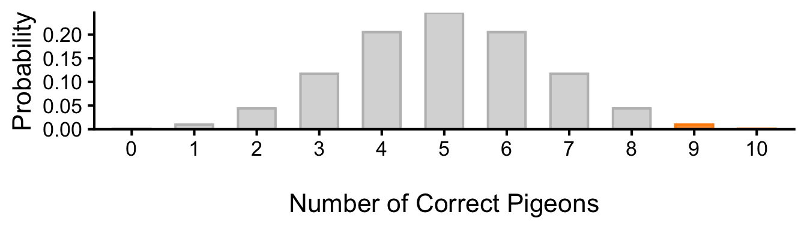
- number of pigeons that are at least as extreme as 9: 0.01 + 0.001 + 0.001 + 0.01 = 0.021
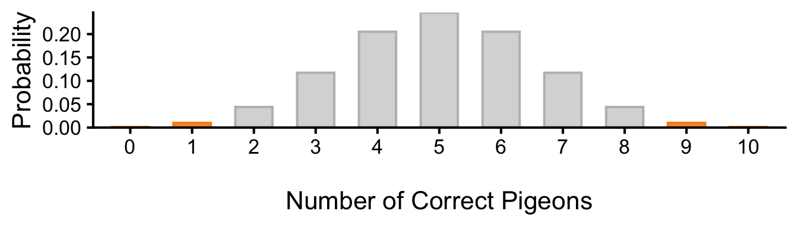
1.1.1.2 Is There a Strong Enough Evidence That This Is Not a Fluke?
In this scenario, when did you decide that the result was not due to chance? How many pigeons would need to answer a question correctly before you would be willing to believe that this type of pigeon is indeed special? Some of you may have said that you would believe that the pigeons are special if 4 out of 4 pigeons got it right, while others may have said that you would not believe that the pigeons are special unless 10 out of 10 pigeons got it right. What was enough for you?
This decision depends on how sure you want to be. Let’s say you decided to believe that these pigeons were special after seeing 4 out of 4 pigeons were correct. However, there is still 6.25% chance that these pigeons could be correct just by guessing. As you make a decision to believe that these pigeon are special, you are taking a risk of making an error and believing this effect when there is none – in this case, 6.25% chance of making an error.
If you want to be more sure, you could ask 10 pigeons, and only believe that they are special if all of them are correct (Figure 3). You are being a lot more conservative, because the probability of all 10 pigeons being correct by chance is only about 0.098%.
There is an actual statistical test that formalizes this logic, called a binomial test. The binomial test is a statistical test that allows you to determine whether the number of a binary event like a yes/no response in a series of trials is significantly different from what would be expected by chance. In the case of the magical pigeons, the binomial test would allow you to determine whether the number of pigeons that answered correctly is significantly greater than what would be expected by chance (i.e., 50% correct). And, as it happens, binomial tests are often used on pigeons in real research. For example, pigeons are excellent at classifying visual patterns into different categories, and binomial tests are often used as a part of the process of establishing that a pigeon actually possesses some visual skill/ability to make the discrimination, and is not simply getting lucky.
1.1.2 How Much Better? Should I Care?
What you just asked is whether the pigeons are any better than chance. And they seem to be. Now, if one of these pigeons tells you that a defendant is guilty, would you trust their answer? If they are available commercially, should you care to buy one? Before you put all your trust in these special pigeons, you should also think about how much better they are than chance would have it. Are their magical power really strong so they would get every single question right, or is it a more modest effect where, they are only slightly better than chance?
1.1.2.1 Ask A Thousand Pigeons
Let’s illustrate this with an example. If you asked 1000 pigeons a question and 540 of them got it right. Are they any better than chance? Probably, because there is only a very small chance that 540 or more pigeons would get it right just by chance (Figure 4). With increasing sample size, it gets harder and harder to get any difference just by chance, and just 40 more pigeons than the chance level is extremely unlikely in this scenario. So you say that these pigeons are indeed special and better than what luck would explain.
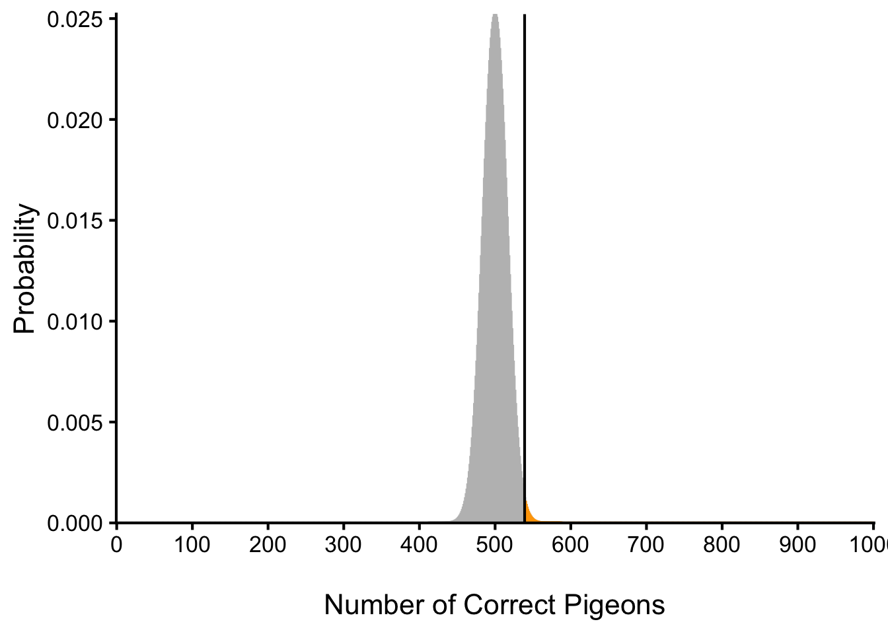
How much better are they? Would you trust these pigeons to make a judgment about a defendant’s guilt? Maybe not, because they are only slightly better than chance (54% vs. 50%). Before you make any practical decisions based on the these pigeons who are outperforming chance, you should consider how much better they are than chance.
1.2 Null Hypothesis Significance Testing (NHST)
What we have just considered with magical pigeons is exactly the logic of Null Hypothesis Significance Testing (NHST), which is a formal approach to deciding between two interpretations of an observed pattern in a sample. One interpretation is called the null hypothesis (often symbolized \(H_0\) and read as “H-naught”). This is the idea that there is no such pattern in the population and that the observed pattern in the sample “occurred by chance.” The other interpretation is called the alternative hypothesis (often symbolized as \(H_1\)). This is the idea that there is indeed the same pattern in the population and that the observed pattern in the sample reflects this pattern in the population.
1.2.1 Statistical Significance: Is The Pattern Any Different From Chance?
Again, every pattern in a sample can be interpreted in either of these two ways: It might have occurred by chance, or it might reflect a pattern in the population. So researchers need a way to decide between them. Although there are many specific null hypothesis testing techniques, they are all based on the same general logic. The steps are as follows:
- Assume, for the moment, that the null hypothesis is true. In the population, there is no interesting pattern like the one observed in the sample.
- Determine how likely the observed pattern in the sample would be if the null hypothesis were true.
- If the observed pattern would be extremely unlikely, then reject the null hypothesis in favor of the alternative hypothesis. If it would not be extremely unlikely, then cannot reject the null hypothesis.
Following this logic, we can begin to understand why Mehl and his colleagues concluded that there is no difference in talkativeness between women and men in the population. In essence, they asked the following question: “If there were no difference in the population, how likely is it that we would find a difference of 546 words in our sample?” Their answer to this question was that a difference of 546 words (or, more precisely, a difference of this magnitude or extreme) would be fairly likely if the null hypothesis were true. Therefore, they failed to reject the null hypothesis—concluding that there is no evidence of a gender difference in the population.
Let’s unpack the second step of the logic a little more. Notice that their question, “If there were no difference in the population (the null hypothesis), how likely is it that we would find a difference of 546 words in our sample?”, has a if-then structure: If the null hypothesis about the population is true, then in our sample of the population, how likely is it that we would see a pattern like the one we observed in our sample? “If the null hypothesis were true” is a little bit of a mouthful, so we will often shorten it to “under the null” or “given the null.”
Because the sample is a subset of the population, if there something is true of the population, we should expect to see a similar pattern in our sample most of the time. However, sometimes, just by chance, the pattern in the sample may look very different from the population. For example, even if the pigeons were just guessers, if you keep probing 10 pigeons and noting how many got the answers right, a few of those “studies” will have 10 correct by chance (Figure 3). Similarly, imagine conducting a study like Mehl’s 100 times and lining up all 100 study results from smallest difference to largest gender difference. If men and women are equally talkative, most results cluster near no difference. Our observed difference of 546 words sits somewhere along this line. The question becomes, how many of those 100 studies found a difference at least as large as ours? If very few did, our result is unusual. It sits far out in the tail of the distribution of differences. This is the key idea of null hypothesis testing: the probability of the pattern at least as extreme as our sample or more extreme, under the assumption that there is no pattern in the population (the null hypothesis). Because this is such a central idea, it has a special name: the p-value. A low p-value means that the sample or more extreme result would be unlikely if the null hypothesis were true and leads to the rejection of the null hypothesis. A p-value that is not low means that the sample or more extreme result would be likely if the null hypothesis were true, and there is not enough evidence to reject the null hypothesis.
So how do we go from here to the binary yes/no answer to “Is this pattern real?” This is the question of deciding a threshold: how low the p-value must be for the sample result is considered unlikely enough to reject the null hypothesis. In null hypothesis testing, this threshold is called \(\alpha\) (alpha) level. By convention, the \(\alpha\)-level is almost always set to .05. If there is a 5% chance or less of a result at least as extreme as the sample result if the null hypothesis were true, then the null hypothesis is rejected. When this happens, the result is said to be statistically significant. If there is greater than a 5% chance of a result as extreme as the sample result when the null hypothesis is true, then the null hypothesis cannot be rejected. This does not necessarily mean that the researcher accepts the null hypothesis as true. It only means that there is not currently enough evidence to reject it. Researchers never use the expression “accept the null hypothesis.” or “the null hypothesis is true.”
As we discussed with the pigeon example, this decision comes with a risk of making an error. If you claim that there is an effect when there is none, you are making an error. This type of error is called a Type I error (Table 4). The \(\alpha\)-level is the probability of making a Type I error (Type I error rate). If you set the \(\alpha\)-level to .05, you are willing to take a 5% chance risk of making a Type I error. If you set the \(\alpha\)-level to .01, then you are accepting a 1% chance of making a Type I error.
However, there is also an error associated with being too conservative. Like many things in life, there is a trade-off in your decision. The problem with being too conservative is that you might be missing an interesting effect when there is one. This type of error is called a Type II error. Are you able to detect an effect when there is one? In other words, what’s the chance that you will NOT make a Type II error if there is indeed an effect? This is called the statistcal power. Power is simply our ability to correctly detect an effect that exists. It is influenced by the size of the effect (larger effects are easier to detect), the significance level we set (making it easier to reject the null makes it easier to detect an effect, but increases the likelihood of a Type I error), and the sample size used (larger samples make it easier to reject the null).
| You conclude … | ||
|---|---|---|
| “Statistically significant” | “Not statistically significant” | |
In reality, effect exists in the population. |
Correct. |
Type II Error. False Negative. |
In reality, no effect in the population. Just a fluke. |
Type I Error. False Positive. You overclaimed. |
Correct. |
1.2.1.1 The Misundertood p-Value
The p-value is one of the most misunderstood quantities in psychological research (Cohen 1994). Even professional researchers misinterpret it, and it is not unusual for such misinterpretations to appear in statistics textbooks!
The most common misinterpretation is that the p-value is the probability that the null hypothesis is true—that the sample result occurred by chance. For example, a misguided researcher might say that because the p-value is .02, there is only a 2% chance that the result is due to chance and a 98% chance that it reflects a real pattern in the population. But this is incorrect. The p-value is really the probability of a result at least as extreme as the sample result if the null hypothesis were true. So a p-value of .02 means that if the null hypothesis were true, a sample result this extreme would occur only 2% of the time.
You can avoid this misunderstanding by remembering that the p-value is not the probability that any particular hypothesis is true or false. Instead, it is the probability of obtaining the sample result if the null hypothesis were true.
1.2.1.2 Role of Sample Size and Statistical Significance
Recall that null hypothesis testing involves answering the question, “If the null hypothesis were true, what is the probability of a sample result as extreme as this one?” In other words, “What is the p-value?” It can be helpful to see that the answer to this question depends on just two considerations: the strength of pattern in the sample and the size of the sample. Going back to our pigeons, if 10 out of 10 pigeons got the answers correct, that is a strong pattern. But it also depends on the sample size as you’ve seen in Figure 4, where even a small difference from chance (just 40 more pigeons than chance) is statistically significant when the sample size is large (1000 pigeons). That is, for the same difference (4% difference from chance) has a lower p-value when the sample size is larger. If only 54 out of 100 pigeons got the answers correct, although it’s the same 4% difference from chance, p-value is higher because the sample size is smaller. Bringing this to Psychological Science, let’s imagine a study in which a sample of 500 women is compared with a sample of 500 men in terms of hapiness on a scale 1 to 5. Hypothetically, let’s just say women were 2 points happier than men. If there were really no gender difference in the population, then that big of a difference in such a large sample should seem highly unlikely. Now imagine a similar study in which a sample of three women is compared with a sample of three men. Even if there were no gender difference in the population, 2-point difference in happiness based on such a small sample should seem likely. And this is precisely why the null hypothesis would be rejected in the first example and cannot be rejected in the second.
What you can remember from these examples is that weak patterns in small samples (N < 30) are not going to be statistically significant and that strong patterns based on larger samples (say, N > 100) are going to be statistically significant. If you keep this lesson in mind, you will often know whether a result is statistically significant based on the descriptive statistics alone. It is extremely useful to be able to develop this kind of intuitive judgment. One reason is that it allows you to develop expectations about how your formal null hypothesis tests are going to come out, which in turn allows you to detect problems in your analyses. For example, if your sample relationship is strong and you have a large enough sample, then you would expect to reject the null hypothesis. If for some reason your formal null hypothesis test indicates otherwise, then you need to double-check your computations and interpretations. A second reason is that the ability to make this kind of intuitive judgment is an indication that you understand the basic logic of this approach in addition to being able to do the computations.
1.2.2 Practical Significance: How Much Better Than Chance? Should I Care?
A statistically significant result is not necessarily a strong one. Even a very weak result can be statistically significant if it is based on a large enough sample. This is closely related to Janet Shibley Hyde’s argument about gender differences [Hyde (2007). The differences between women and men in mathematical problem solving and leadership ability are statistically significant. But the word significant can cause people to interpret these differences as strong and important—perhaps even important enough to influence the college courses they take or even who they vote for. As we have seen, however, these statistically significant differences are actually quite weak—perhaps even “trivial.”1
This is why it is important to distinguish between the statistical significance of a result and the practical significance of that result. Practical significance refers to the importance or usefulness of the result in some real-world context. Many gender differences are statistically significant—and may even be interesting for purely scientific reasons—but they are not practically significant. In clinical practice, this same concept is often referred to as “clinical significance.” For example, a study on a new treatment for social phobia might show that it produces a statistically significant positive effect. Yet this effect still might not be strong enough to justify the time, effort, and other costs of putting it into practice—especially if easier and cheaper treatments that work almost as well already exist. Although statistically significant, this result would be said to lack practical or clinical significance.
Key Takeaways
- The logic of null hypothesis significance testing (NHST) is to determine whether an observed pattern in a sample is likely to have occurred by chance or reflects a real pattern in the population.
- The p-value is the probability of a sample result at least as extreme as the one observed under the null hypothesis.
- The \(\alpha\)-level is the threshold for determining whether a p-value is low enough to reject the null hypothesis. By convention, it is set to .05. This is the Type I error rate that you will overclaim an effect when there is none.
- A statistically significant result is one that has a p-value less than or equal to the \(\alpha\)-level, and passed the “is the observed pattern any different from chance?” question.
- A statistically significant tells you that the pattern is different from chance, but it does not tell you by how much. A practically significant results are those that are strong enough to be useful in some real-world context.
References
Cohen, J. 1994. “The World Is Round: P \(<\) .05.” American Psychologist 49: 997–1003.
Hyde, Janet Shibley. 2007. “New Directions in the Study of Gender Similarities and Differences.” Current Directions in Psychological Science 16 (5): 259–63.
Mehl, Matthias R., Simine Vazire, Nairán Ramı́rez-Esparza, Richard B. Slatcher, and James W. Pennebaker. 2007. “Are Women Really More Talkative Than Men?” Science 317 (5834): 82–82.
Footnotes
And of course, even if it were not trivial, these results do not support innate differences between genders. There are many alternative explanations for these differences, including socialization and cultural expectations.↩︎